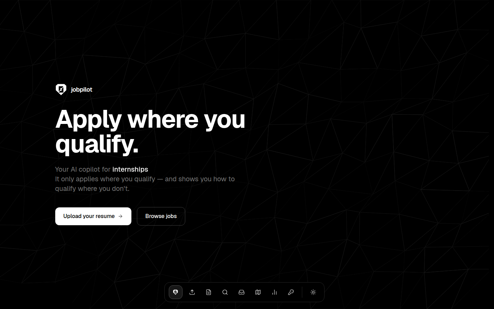

Apply where
you qualify.
An AI job application copilot. It screens every posting against what's actually on your resume, drafts the applications you qualify for, and hands you a concrete roadmap for the ones you don't — yet.



How to use it, start to finish
Real screenshots from a live run (demo data). Six steps from a blank install to a tracked application.
Paste your API keys
Open Settings and paste your keys — Claude (required, powers everything AI), plus free Adzuna and RapidAPI/JSearch keys for the widest job coverage. They're saved to a gitignored file on your machine and apply instantly. No config files, no restarts.

Upload your resume
Drop in a PDF. Claude extracts a structured profile — skills, experience, projects, education — and shows you exactly what it read. Nothing is invented: if it's not on your resume, it's not in your profile.

Sharpen it in the Resume studio
Get a blunt review where every issue comes with a concrete fix, answer the grill-me interview that digs out what you left unsaid, then rebuild — with 10 typeset PDF templates, previewed with your actual content, and the top 3 recommended for your profile.
Search — or let it recommend
One search hits six sources: Adzuna, Greenhouse and Lever company boards, LinkedIn/Indeed/Glassdoor via JSearch, Remotive, and community GitHub lists — deduped, location-strict, and screened against your resume with an honest 0–100 verdict. Or press "Recommend for me" for searches anchored to your actual field.
Draft, tailor, apply, track
Qualified jobs get a drafted cover letter and a per-job tailored resume PDF — you review and hit send yourself, always. Then track each application through interviewing to an offer; anything quiet for ten days gets a drafted follow-up note.

Watch the funnel move
Stats shows your whole pipeline — qualification rate, response rate, match scores over time. Close roadmap gaps, re-screen, and watch the line climb. And every win gets distilled into lessons that sharpen your next application.
An honest 0–100, not keyword bingo
- Only what's on the page.Claude judges from what's actually written on your resume — it never assumes skills you didn't list.
- Must-haves vs nice-to-haves.Every requirement is marked met or missing. Qualified means every must-have is met; the score says how comfortably.
- The verdict, with receipts.What matched, what's missing, and why — and the missing list feeds straight into your roadmap.
Before you start: what you need
Two tools, both free: Node.js (version 20 or newer) and git. That's it.
npm install downloads it (and everything else) automatically. You only install Node.js; npm comes bundled with it.
macOS
With Homebrew, or download the installer from nodejs.org.
brew install node git # verify node -v # v20 or newer
Windows
With winget (built into Windows 10/11), or the installer from nodejs.org.
winget install OpenJS.NodeJS.LTS
winget install Git.Git
# verify (new terminal)
node -v
Linux
Via your package manager, or nvm if your distro ships an old Node.
sudo apt install nodejs npm git # verify node -v # v20 or newer
Run it locally
jobpilot is a local app — your resume, your keys, and your data never leave your machine.
# 1. Grab it git clone https://github.com/krishaanth5831/jobpilot.git cd jobpilot npm install # installs Next.js and everything else automatically # 2. Start it npm run dev # 3. Open http://localhost:3000/settings and paste your keys (Step 1 above)
Get your keys: Claude API (required) · Adzuna (free) · JSearch on RapidAPI (free tier) — each takes a couple of minutes and pastes straight into the Settings page.